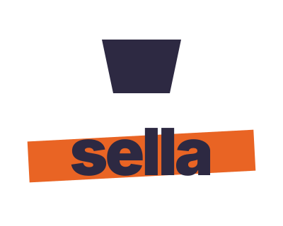
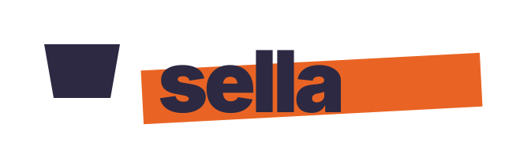
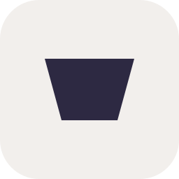
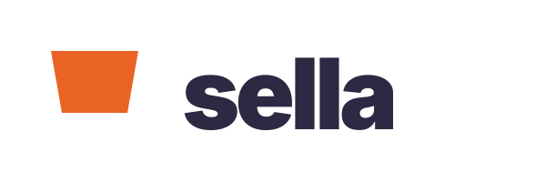

Version 4 · combo of v3-1 + v3-4, no more dot
Six variants exploring the clip-and-highlight combination, with orange used as something other than a dot in every concept.
Standard vertical brand-architecture lockup. Clip mark is the icon; wordmark with highlighter sweep sits underneath. Reads as a complete logo — works for packaging, hero placements, sign-in screens.
Orange use: highlighter sweep through wordmarkOn warm canvas

On dark surface
Horizontal sibling of v4-1. Reads better in nav bars, email signatures, narrow strips. The clip and the wordmark stay clearly separate elements rather than physically touching.
Orange use: highlighter sweep through wordmarkOn warm canvas

On dark surface
The clip sits just above the wordmark like a real binder clip holding a sheet of paper — physical metaphor without illustration. The literal liaison artifact, made graphic.
Orange use: highlighter sweep through wordmarkOn warm canvas
On dark surface
The wordmark variant of the system — for cases where the icon isn't needed (footers, in-line text, dense surfaces). The highlighter extends slightly past both ends of the type, like a real marker stroke that didn't quite stop on time.
Orange use: highlighter sweep, extends past typeOn warm canvas
On dark surface
The icon variant of the system — for favicons, app icons, anywhere only the mark is shown. Dot removed entirely; orange shows up only when the wordmark is present, never as a dressing on the icon. The clip earns its character from silhouette alone.
Orange use: none — orange lives in the wordmark when pairedOn warm canvas

On dark surface
Alternative orange placement — the clip itself carries the brand color, the wordmark stays straight cool-700, no highlighter. Useful for evaluating: does Sella feel right with orange in the icon, or in the gesture? Different psychology.
Orange use: clip color itself, no highlighterOn warm canvas

On dark surface
Notes: concepts 01–04 use transparent canvas (no warm container) so the wordmark and clip can sit on any background — they read weakly on dark and would need light-on-dark variants. Concept 05 carries its own warm container and stays legible everywhere. Concept 06 is transparent but the orange clip stays vivid on dark while the cool wordmark fades — that's a real signal worth weighing if you go that direction.